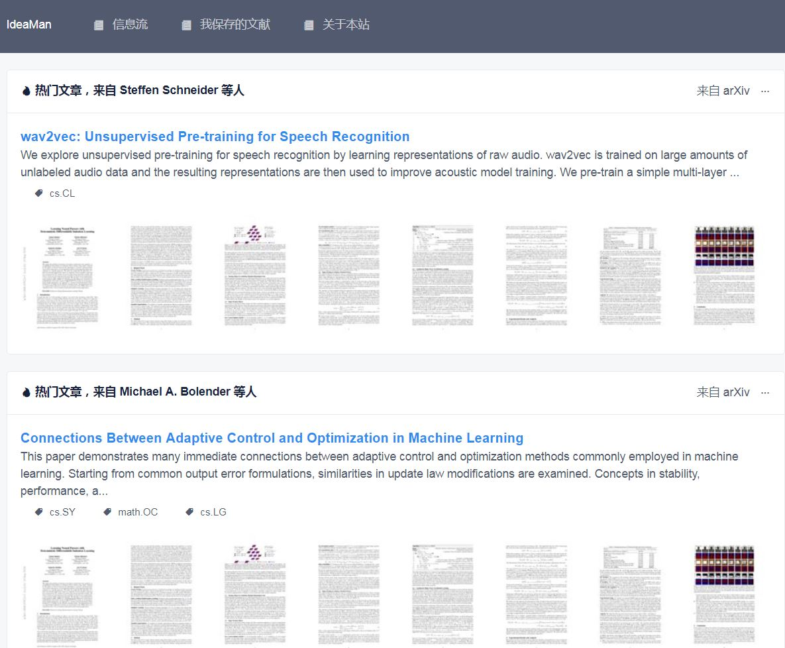
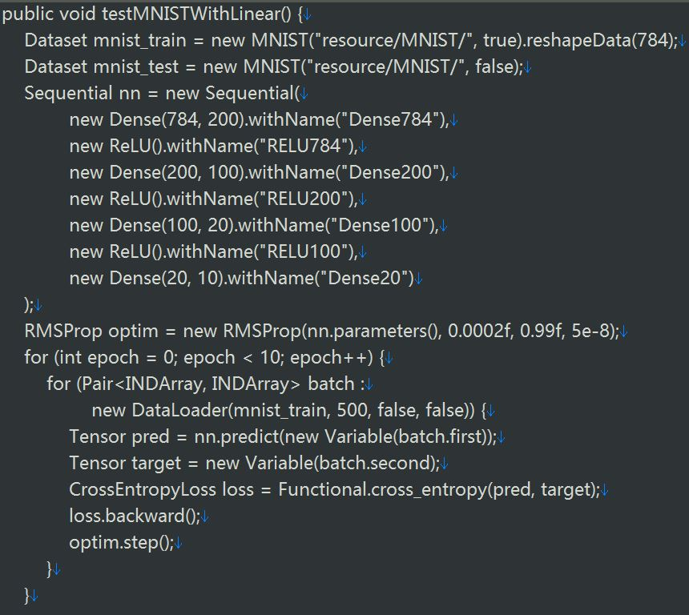

- 邮 箱：guogb@swc.neu.edu.cn
- 电 话：+86-024-83683332
- 主 页：https://guoguibing.github.io/cn/
- 地 址：辽宁省沈阳市浑南区创新路195号东北大学浑南校区信息楼B436室, 110169
郭贵冰，长聘教授，博导，辽宁省百千万人才，LibRec推荐系统库创始人，SCI二区期刊《Electronic Commerce Research and Applications》、《ACM Transactions on Recommender Systems》编委，中国计算机学会会员，中国人工智能学会智能服务专业委员会委员。师从新加坡南洋理工大学(NTU)的Assoc. Prof. Jie Zhang和Prof. Daniel Thalmann，2015年7月获得博士学位；2015年1~10月，在新加坡管理大学(SMU)朱飞达教授的实验室担任研究员。2015年11月，聘为东北大学软件学院副教授。2019年7月破格评为教授，同年12月评为东北大学长聘教授、辽宁省百千万人才。2020年9月，获得博士生导师资格。
研究兴趣包括 推荐系统、知识图谱、智能问答、自然语言处理。在相关研究领域已发表80余篇国际学术会议和期刊文章，Google学术总引用：2828 (Google学术页面)。出版了一部学术专著：《推荐系统进展：方法与技术》（点此购买）。目前的主要研究内容包括以下两个方面：
- 推荐系统：重点是面向大数据的深度协同推荐算法，融合文本、图像、社交、知识图谱等多模态信息、以深度学习技术为基础的新型推荐系统。推荐系统是现代Web应用的核心技术之一，通过对大数据的用户偏好行为进行分析和建模，学习出目标用户的偏好模式，从而给出精准的个性化物品推荐，是典型的大数据应用。
- 知识图谱：重点是知识图谱的构建及应用。知识图谱在工业界都有非常广泛的应用，它的重要性正与日倶增。如何构建一个合适可用的知识图谱，以及如何高效应用知识图谱的知识内容，成为研究的重要内容。具体课题包括实体抽取、关系链接、个人知识图谱、商品知识图谱、时序知识图谱、知识图谱的补全和对齐等。
- 智能问答：重点是基于知识图谱的智能问答算法，探索融合知识图谱信息的精准问答匹配技术。其挑战主要包括：如何理解并有效表示问题；如何将问题映射为结构化查询；如何生成自然语言答案等。常见的智能问答系统如客服和聊天机器人、Siri等，可以分为基于事实的问答系统、基于常见问题集的问答系统和开放域的问答系统等三类。相关的研究课题还包括机器阅读理解、序列模型和语言模型等内容。
- 2021.1，2020年江河集团奖教金，东北大学。
- 2019.12.27，入选辽宁省第13批“百千万人才工程”
- 2018.9.28，辽宁省自然科学学术成果奖，学术论文类三等奖。
- 2017.9.19，辽宁省自然科学学术成果奖，学术论文类三等奖。
- 2016，Best Student Paper Award，IEEE International Conference on Tools with Artificial Intelligence。
扫码加微信
学术科研与应用
基本概况
科研团队现有本科生课题组二十余人、研究生课题组（包括硕士、博士）三十余人，计划每年招收9名硕士、1~2名博士研究生、10+名本科生。科研团队与新加坡南洋理工大学(NTU)、新加坡管理大学(SMU)有密切联系，表现突出的同学有机会被推荐到新加坡交换学习，进一步深造。
- 研究生培养模式：合作导师制。
- 为每个有潜力的研究生，邀请一位经验丰富的学者作为合作导师。
- 为每个有潜力的研究生，搭配一位高年级的本科生进行结伴研究。
- 学生、导师、合作导师就共同感兴趣的研究课题进行深度合作。
- 合作导师：国内外著名高校博士、博士后、教授及企业老师等。
- 学生要求：
- 为人真诚、勤学好问；英语（CET-6）、数学、编程能力强；
- 学习过深度学习课程，使用过TensorFlow或PyTorch的学生优先；
- 获得国家奖学金的研究生：翟松林、欧阳世昌、孟媛、杨恩能
- 科研论文列表，Google学术论文引用
- 课题组资源汇总
主持的课题项目
- 2020.1.1 - 2023.12.31，国家自然科学基金面上项目，基于多类型用户偏好和物品属性增强的序列推荐技术研究，61972078，58万元。
- 2018.1.1 - 2020.12.31，国家自然科学基金青年科学基金项目，基于多维辅助反馈的数据生成和物品推荐机理研究，61702084，25万元。
- 2019.1.1 - 2021.12.31，教育部项目基本科研业务费项目优秀青年科技人才培育项目，基于多态行为轨迹的个性化推荐技术研究，N181705007，25万元。
- 2021.6 - 2024.6，迁移学习在在线广告预估领域的技术研究，东北大学软件学院2021年科技奖励培育项目，项目负责人，10万元。
- 2021.8.1 - 2021.12.15，PyTorch模型开发，华为昇腾众智计划项目，项目负责人，70万元。
- 2018.9.1 - 2019.5.31，京东AI研究院“京东葡萄树--学者计划”，基于知识图谱和图嵌入技术的推荐技术研究。
- 2017.9.1 - 2018.8.31，华为HIRP OPEN 2017基金项目，基于深度学习和生成式对抗神经网络技术的推荐系统模型，20万元。
- 2017.5.1 - 2019.4.30，辽宁省自然科学基金指导计划面上项目，融合多类型辅助反馈的个性化电商推荐，20170540319，5万元。
- 2017.1.1 - 2018.12.31，教育部基本科研业务费国家项目培育种子基金，融合多类型隐式反馈的社会化推荐机理研究，N161704001，22万元。
- 2016.6 - 2021.5，东北大学软件学院“青苹果”计划 - 优秀青年骨干教师培养计划，15万元。
数据科学 科研团队目前由三位教师构成，分别是：郭贵冰（团队负责人）、刘园、姜琳颖。团队的主要研究方向包括：推荐系统、区块链技术、自然语言处理。团队拟每年招收12名硕士研究生、数十名高年级本科生参与三大研究方向的学术研究。
推荐系统：- 基于会话序列的推荐模型
- 基于知识图谱的推荐模型
- 基于强化学习的推荐模型
- 推荐模型的攻击与防御
- 推荐模型的可解释性、新颖性
- 关联项目：LibRec、LibDL
自然语言处理：
- 基于知识图谱的问答系统
- 机器阅读理解
- 自动文本摘要
- 信息检索
- 关联项目：IdeaMan、LibDL
区块链技术：
- 区块链公平高效共识机制研究
- 区块链在物联网的应用
- 区块链在车联网的应用
- 具有隐私保护的信誉系统研究
- 关联项目：DevChain
基本概况
 是领先的推荐系统开源算法库，实现了90+个推荐算法，可解决评分预测和物品推荐两大关键问题。该开源库在GitHub的推荐系统领域排名第一，获得了大家的广泛认可和支持。当前的发展方向是支持大数据的工业应用。2016年1月，LibRec核心开发团队正式成立。到目前为止，共有20位成员参与开发，包括7名有多年研发经验的IT公司研发经理和职员，3名海外博士，5名国内博士，3名硕士研究生【查看团队成员详情】
是领先的推荐系统开源算法库，实现了90+个推荐算法，可解决评分预测和物品推荐两大关键问题。该开源库在GitHub的推荐系统领域排名第一，获得了大家的广泛认可和支持。当前的发展方向是支持大数据的工业应用。2016年1月，LibRec核心开发团队正式成立。到目前为止，共有20位成员参与开发，包括7名有多年研发经验的IT公司研发经理和职员，3名海外博士，5名国内博士，3名硕士研究生【查看团队成员详情】
核心团队
- Core 模块增强：负责推荐算法的代码实现、并行学习、增量更新，以及融合多个推荐算法的集成模型。
- Spark 模块开发：负责LibRec-Spark的通信桥接、基于Spark的高级推荐算法实现、工业级的扩展应用等。
- LibDL 框架开发：提出基于Java的自有深度学习框架LibDL、实现基于LibDL的深度推荐算法及功能扩展等。
- 推广宣传：负责微信、微博、知乎等公众平台的帐号运营、各论坛的推广宣传等。
加入我们
- 投递个人简历到 guogb@swc.neu.edu.cn
- 通知面试
- 加入团队
微信社区群
LibRec社区（500人满员）、LibRec社区B（220人、尚未满员）。如何加入：公众号后台输入“社区群”。
微信公众号：LibRec智能推荐【aiLibRec】
项目开发与研究
项目简介
本项目旨在构建学术领域的通用管理框架，研究的主要内容有：（1）（由关键词定义的）特定研究领域的进展跟踪和内容推荐，如社交关注和论文发表；（2）学术作者的论文检索和影响计算，如作者关系图谱、领域影响力、文献管理等；（3）学术事件的及时跟进和个性推荐，如国际会议的举办、学术报告的推荐等。
团队组成
团队成立于2018年9月，目前由 5 名本科学生组成，欢迎更多学生参与。
项目进展
主要编程语言是Python，已经完成或正在进行的内容有：
- 通过在Tweet、Arxiv、Reddit等多源信息渠道上抓取数据，完成了数据的相关性过滤、内容的领域分析、文档的简略摘要等，研究成果应用于【LibRec智能推荐】微信公众号的【LibRec精选】档目。
- PDF格式的论文内容分析：论文的作者、院校、邮箱信息的抓取、论文缩略图的生成、论文关键词（短语）的抽取等；
- 学术作者的影响力分析：作者关系图的构建和展示、多ID作者的识别等。
- 基于论文摘要、参考文献引用图、用户行为等要素的论文推荐；
项目展示
项目简介
本项目旨在构建一个通用的基于Java语言的深度学习模架。深度学习已经成为业界热门的主题词，其业务应用已经从语音识别、计算机视觉扩展到自然语言处理等诸多领域。同时，也涌现了不少颇具影响力的深度学习框架，如Tensorflow、PyTorch等。但是，基于Java语言的深度学习框架相对较少，而业界也有相当的业务需求。
团队组成
团队成立于2018年11月，目前 5 名本科学生组成，欢迎更多学生参与。
项目进展
主要编程语言是Java，已经完成或正在进行的内容有：
- LibDL框架的顶层设计、功能模块划分、动态计算图等的讨论和分析；
- 已完成文本、图像等源数据的读取、转换等操作，包括word2vec词嵌入等；
- 已完成卷积神经网络CNN，包括卷积和池化操作，正在实现conv2d等函数。
- 已完成循环神经网络RNN及双向RNN，正在处理LSTM、GRU等模型的实现。
- 已完成除噪自编码器DAE的开发和测试，正在处理堆叠SDAE模型的实现。
- 神经网络模型的序列化、反序列化等，模型训练学习的可视化等技术的实现。
项目展示
教学课程与内容
课程简介
推荐系统通过分析用户对一系列事物的历史偏好来发现其行为模式，然后从一些尚未经历过的物品中推荐一些感兴趣的物品。课程的主要内容包括：（1）基于内容的过滤算法；（2）基于用户反馈的协同过滤算法；（3）基于数据降维的隐式因子模型；（4）推荐系统的分析和评估；（5）推荐系统开源库 LibRec 及其应用。
课程内容
- Chapter 1: Introduction
- Chapter 2: Content-based Recommendation
- Chapter 3: Collaborative Filtering with LibRec
- Chapter 4: Matrix Factorization
- Chapter 5: Factorization Machine
- Chapter 6: Neural Recommendation
- Chapter 7: Sequential Recommendation
- Chapter 8: Industry Implementations
课程简介
本课程介绍自然语言处理的主要研究内容及关键技术，以及相关的研究成果。课程的主要内容包括：（1）数学基础，如贝叶斯模型、n元语法模型和 HMM模型等；（2）语言学基础，介绍有关词法和语法等方面的知识，包括词语搭配、语义消歧、句法分析等；（3）具体应用，如文本分类和聚类、信息检索、机器翻译等。
课程内容
- Chapter 1: Introduction
- Chapter 2: Basic Text Processing
- Chapter 3: N-gram Language Modeling
- Chapter 4: Text Classification
- Chapter 5: Part-of-Speech Tagging
- Chapter 6: Sequence Processing with Recurrent Networks
- Chapter 7: Question Answering and Summarization
- Chapter 8: Information Extraction